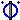
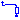
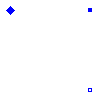

This package contains components for modeling electrical machines, specially threephase induction machines, based on space phasor theory:
| Name | Description |
|---|---|
|  AirGapS | Airgap in stator-fixed coordinate system |
| AirGapR | Airgap in rotor-fixed coordinate system |
|  SquirrelCage | Squirrel Cage |
| Squirrel Cage | |
| Permanent magnet excitation | |
| ElectricalExcitation | Electrical excitation |
| Linear airgap model of a DC machine |

Model of the airgap in stator-fixed coordinate system, using only equations.
| Type | Name | Default | Description |
|---|---|---|---|
| p | number of pole pairs | ||
| Lm | main field inductance [H] |
| Type | Name | Description |
|---|---|---|
| flange_a | ||
| support | support at which the reaction torque is acting | |
| spacePhasor_s | ||
| spacePhasor_r |
model AirGapS "Airgap in stator-fixed coordinate system"
constant Integer m=3 "number of phases";
parameter Integer p(min=1) "number of pole pairs";
parameter Modelica.SIunits.Inductance Lm "main field inductance";
output Modelica.SIunits.Torque tau_electrical;
Modelica.SIunits.Angle gamma "Rotor displacement angle";
Modelica.SIunits.Current i_ss[2]
"Stator current space phasor with respect to the stator fixed frame";
Modelica.SIunits.Current i_sr[2]
"Stator current space phasor with respect to the rotor fixed frame";
Modelica.SIunits.Current i_rs[2]
"Rotor current space phasor with respect to the stator fixed frame";
Modelica.SIunits.Current i_rr[2]
"Rotor current space phasor with respect to the rotor fixed frame";
Modelica.SIunits.Current i_ms[2]
"Magnetizing current space phasor with respect to the stator fixed frame";
Modelica.SIunits.MagneticFlux psi_ms[2]
"Magnetizing flux phasor with respect to the stator fixed frame";
Modelica.SIunits.MagneticFlux psi_mr[2]
"Magnetizing flux phasor with respect to the rotor fixed frame";
Real RotationMatrix[2,2] "matrix of rotation from rotor to stator";
protected
parameter Modelica.SIunits.Inductance L[2,2] = {{Lm,0},{0,Lm}}
"inductance matrix";
public
Modelica.Mechanics.Rotational.Interfaces.Flange_a flange_a;
Modelica.Mechanics.Rotational.Interfaces.Flange_a support
"support at which the reaction torque is acting";
Machines.Interfaces.SpacePhasor spacePhasor_s;
Machines.Interfaces.SpacePhasor spacePhasor_r;
equation
// mechanical angle of the rotor of an equivalent 2-pole machine
gamma=p*(flange_a.phi-support.phi);
RotationMatrix={{+cos(gamma),-sin(gamma)},{+sin(gamma),+cos(gamma)}};
i_ss = spacePhasor_s.i_;
i_ss = RotationMatrix*i_sr;
i_rr = spacePhasor_r.i_;
i_rs = RotationMatrix*i_rr;
// Magnetizing current with respect to the stator reference frame
i_ms = i_ss + i_rs;
// Magnetizing flux linkage with respect to the stator reference frame
psi_ms = L*i_ms;
// Magnetizing flux linkage with respect to the rotor reference frame
psi_mr = transpose(RotationMatrix)*psi_ms;
// Stator voltage induction
spacePhasor_s.v_ = der(psi_ms);
// Rotor voltage induction
spacePhasor_r.v_ = der(psi_mr);
// Electromechanical torque (cross product of current and flux space phasor)
tau_electrical = m/2*p*(spacePhasor_s.i_[2]*psi_ms[1] - spacePhasor_s.i_[1]*psi_ms[2]);
flange_a.tau = -tau_electrical;
support.tau = tau_electrical;
end AirGapS;
Model of the airgap in rotor-fixed coordinate system, using only equations.
| Type | Name | Default | Description |
|---|---|---|---|
| p | number of pole pairs | ||
| Lmd | main field inductance d-axis [H] | ||
| Lmq | main field inductance q-axis [H] |
| Type | Name | Description |
|---|---|---|
| flange_a | ||
| support | support at which the reaction torque is acting | |
| spacePhasor_s | ||
| spacePhasor_r |
model AirGapR "Airgap in rotor-fixed coordinate system"
constant Integer m=3 "number of phases";
parameter Integer p(min=1) "number of pole pairs";
parameter Modelica.SIunits.Inductance Lmd "main field inductance d-axis";
parameter Modelica.SIunits.Inductance Lmq "main field inductance q-axis";
output Modelica.SIunits.Torque tau_electrical;
Modelica.SIunits.Angle gamma "Rotor displacement angle";
Modelica.SIunits.Current i_ss[2]
"Stator current space phasor with respect to the stator fixed frame";
Modelica.SIunits.Current i_sr[2]
"Stator current space phasor with respect to the rotor fixed frame";
Modelica.SIunits.Current i_rs[2]
"Rotor current space phasor with respect to the stator fixed frame";
Modelica.SIunits.Current i_rr[2]
"Rotor current space phasor with respect to the rotor fixed frame";
Modelica.SIunits.Current i_mr[2]
"Magnetizing current space phasor with respect to the stator fixed frame";
Modelica.SIunits.MagneticFlux psi_ms[2]
"Magnetizing flux phasor with respect to the stator fixed frame";
Modelica.SIunits.MagneticFlux psi_mr[2]
"Magnetizing flux phasor with respect to the rotor fixed frame";
Real RotationMatrix[2,2] "matrix of rotation from rotor to stator";
protected
parameter Modelica.SIunits.Inductance L[2,2] = {{Lmd,0},{0,Lmq}}
"inductance matrix";
public
Modelica.Mechanics.Rotational.Interfaces.Flange_a flange_a;
Modelica.Mechanics.Rotational.Interfaces.Flange_a support
"support at which the reaction torque is acting";
Machines.Interfaces.SpacePhasor spacePhasor_s;
Machines.Interfaces.SpacePhasor spacePhasor_r;
equation
// mechanical angle of the rotor of an equivalent 2-pole machine
gamma=p*(flange_a.phi-support.phi);
RotationMatrix={{+cos(gamma),-sin(gamma)},{+sin(gamma),+cos(gamma)}};
i_ss = spacePhasor_s.i_;
i_ss = RotationMatrix*i_sr;
i_rr = spacePhasor_r.i_;
i_rs = RotationMatrix*i_rr;
// Magnetizing current with respect to the rotor reference frame
i_mr = i_sr + i_rr;
// Main flux linkage with respect to the stator reference frame
psi_mr = L*i_mr;
// Main flux linkage with respect to the stator reference frame
psi_ms = RotationMatrix*psi_mr;
// Stator voltage induction
spacePhasor_s.v_ = der(psi_ms);
// Rotor voltage induction
spacePhasor_r.v_ = der(psi_mr);
// Electromechanical torque (cross product of current and flux space phasor)
tau_electrical = m/2*p*(spacePhasor_s.i_[2]*psi_ms[1] - spacePhasor_s.i_[1]*psi_ms[2]);
flange_a.tau = -tau_electrical;
support.tau = tau_electrical;
end AirGapR;

Model of a squirrel cage / damper cage in two axis.
| Type | Name | Default | Description |
|---|---|---|---|
| Lrsigma | rotor stray inductance per phase translated to stator [H] | ||
| Rr | warm rotor resistance per phase translated to stator [Ohm] |
| Type | Name | Description |
|---|---|---|
| spacePhasor_r |
model SquirrelCage "Squirrel Cage"
parameter Modelica.SIunits.Inductance Lrsigma
"rotor stray inductance per phase translated to stator";
parameter Modelica.SIunits.Resistance Rr
"warm rotor resistance per phase translated to stator";
Machines.Interfaces.SpacePhasor spacePhasor_r;
equation
spacePhasor_r.v_ = Rr * spacePhasor_r.i_ + Lrsigma * der(spacePhasor_r.i_);
end SquirrelCage;
Model of an unsymmetrical damper cage cage in two axis.
| Type | Name | Default | Description |
|---|---|---|---|
| Lrsigma | stray inductance in d-axis per phase translated to stator [H] | ||
| Lrsigmaq | stray inductance in q-axis per phase translated to stator [H] | ||
| Rr | warm resistance in d-axis per phase translated to stator [Ohm] | ||
| Rrq | warm resistance in q-axis per phase translated to stator [Ohm] |
| Type | Name | Description |
|---|---|---|
| spacePhasor_r |
model DamperCage "Squirrel Cage"
parameter Modelica.SIunits.Inductance Lrsigma
"stray inductance in d-axis per phase translated to stator";
parameter Modelica.SIunits.Inductance Lrsigmaq
"stray inductance in q-axis per phase translated to stator";
parameter Modelica.SIunits.Resistance Rr
"warm resistance in d-axis per phase translated to stator";
parameter Modelica.SIunits.Resistance Rrq
"warm resistance in q-axis per phase translated to stator";
Machines.Interfaces.SpacePhasor spacePhasor_r;
equation
spacePhasor_r.v_[1] = Rr * spacePhasor_r.i_[1] + Lrsigma * der(spacePhasor_r.i_[1]);
spacePhasor_r.v_[2] = Rrq * spacePhasor_r.i_[2] + Lrsigmaq * der(spacePhasor_r.i_[2]);
end DamperCage;
 Modelica.Electrical.Machines.BasicMachines.Components.PermanentMagnet
Modelica.Electrical.Machines.BasicMachines.Components.PermanentMagnet
Model of a permanent magnet excitation, characterized by an equivalent excitation current.
| Type | Name | Default | Description |
|---|---|---|---|
| Ie | Equivalent excitation current [A] |
| Type | Name | Description |
|---|---|---|
| spacePhasor_r |
model PermanentMagnet "Permanent magnet excitation"
parameter Modelica.SIunits.Current Ie "Equivalent excitation current";
Machines.Interfaces.SpacePhasor spacePhasor_r;
equation
spacePhasor_r.i_ = {-Ie,0};
end PermanentMagnet;
 Modelica.Electrical.Machines.BasicMachines.Components.ElectricalExcitation
Modelica.Electrical.Machines.BasicMachines.Components.ElectricalExcitation
Model of an electrical excitation, converting excitation to space phasor.
| Type | Name | Default | Description |
|---|---|---|---|
| TurnsRatio | 1 | stator current / excitation current |
| Type | Name | Description |
|---|---|---|
| spacePhasor_r | ||
| pin_ep | ||
| pin_en |
model ElectricalExcitation "Electrical excitation"
parameter Real TurnsRatio=1 "stator current / excitation current";
Modelica.SIunits.Current ie "excitation current";
Modelica.SIunits.Voltage ve "excitation voltage";
Machines.Interfaces.SpacePhasor spacePhasor_r;
Modelica.Electrical.Analog.Interfaces.PositivePin pin_ep;
Modelica.Electrical.Analog.Interfaces.NegativePin pin_en;
equation
pin_ep.i + pin_en.i = 0;
ie = +pin_ep.i;
ve = pin_ep.v - pin_en.v;
spacePhasor_r.i_ = {-ie*TurnsRatio,0};
ve = spacePhasor_r.v_[1]*TurnsRatio;
end ElectricalExcitation;

Linear model of the airgap (without saturation effects) of a DC machine, using only equations.
Induced excitation voltage is calculated from der(flux), where flux is defined by excitation inductance times excitation current.
Induced armature voltage is calculated from flux times angular velocity.
| Type | Name | Default | Description |
|---|---|---|---|
| Le | Excitation inductance [H] | ||
| TurnsRatio | Ratio of armature turns over number of turns of the excitation winding |
| Type | Name | Description |
|---|---|---|
| flange_a | ||
| support | support at which the reaction torque is acting | |
| pin_ap | ||
| pin_ep | ||
| pin_an | ||
| pin_en |
model AirGapDC "Linear airgap model of a DC machine"
parameter Modelica.SIunits.Inductance Le "Excitation inductance";
parameter Real TurnsRatio
"Ratio of armature turns over number of turns of the excitation winding";
Modelica.SIunits.AngularVelocity w "Angluar velocity";
Modelica.SIunits.Voltage vei
"Voltage drop across field excitation inductance";
Modelica.SIunits.Current ie "Excitation current";
Modelica.SIunits.MagneticFlux psi_e "Excitation flux";
Modelica.SIunits.Voltage vai "Induced armature voltage";
Modelica.SIunits.Current ia "Armature current";
output Modelica.SIunits.Torque tau_electrical;
Modelica.Mechanics.Rotational.Interfaces.Flange_a flange_a;
Modelica.Mechanics.Rotational.Interfaces.Flange_a support
"support at which the reaction torque is acting";
Modelica.Electrical.Analog.Interfaces.PositivePin pin_ap;
Modelica.Electrical.Analog.Interfaces.PositivePin pin_ep;
Modelica.Electrical.Analog.Interfaces.NegativePin pin_an;
Modelica.Electrical.Analog.Interfaces.NegativePin pin_en;
equation
// armature pins
vai = pin_ap.v - pin_an.v;
ia = + pin_ap.i;
ia = - pin_an.i;
// excitation pins
vei = pin_ep.v - pin_en.v;
ie = + pin_ep.i;
ie = - pin_en.i;
// excitation flux: linearly dependent on excitation current
psi_e = Le * ie;
// induced voltage across field excitation inductance
vei = der(psi_e);
// mechanical speed
w = der(flange_a.phi)-der(support.phi);
// induced armature voltage
vai = TurnsRatio * psi_e * w;
// electrical torque (ia is perpendicular to flux)
tau_electrical = TurnsRatio * psi_e * ia;
flange_a.tau = -tau_electrical;
support.tau = tau_electrical;
end AirGapDC;